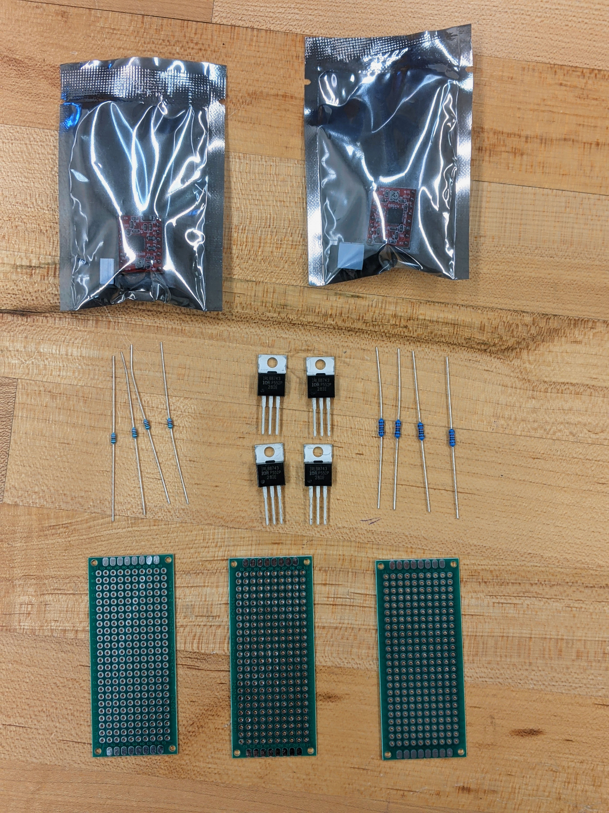
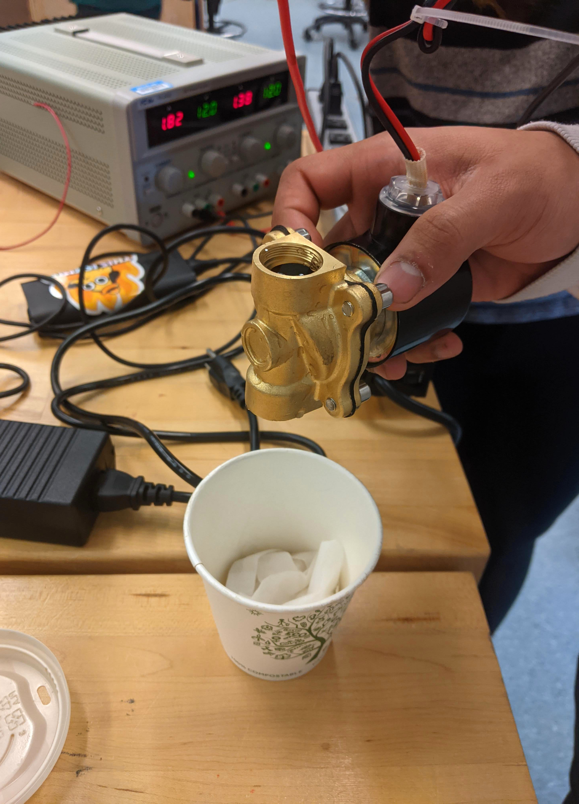

Electrical Design
Overview
The biggest challenge of our electrical system of the Drink Mixer was integrating our two main systems: the LCD touch screen and the mechanisms that dispensed the drinks. The idea was to have the LCD screen send information through the circuit that would open the correct dispenser (like setting a pin high from the arduino to power a singular LED). We explored a couple of options, and eventually settled on the Teensy 4.0 and Solenoids.
Initial Design
Our initial idea for input to output control was to use an Arduino Uno and a Raspberry Pi 3 to power the different components. We also explored using stepper motors to open and close ball valves as a dispensing mechanism. We unfortunately ran into a couple of issues with this option.
Pivots
The first problem came with setting up the Raspberry Pi for the LCD screen. It was too complicated a process to do in the short time frame we had (we explain this in greater detail in the Firmware section), so we pivoted to using a Teensy 4.0. We followed Stan Riefel’s wiring guide provided on his Github page, adjusting some of the pinouts as Stan used a Teensy 3.5 instead of a 4.0.
We also noticed that the stepper motors were unable to move the ball valves that we bought. Upon realizing this, we pivoted to using solenoids, which were easier to incorporate into our circuit as well because it could function as the dispenser on its own without any extra components such as an external valve.
We experienced some issues trying to power our solenoids. The Teensy wasn’t able to provide enough power to the solenoids, so to remedy this we used n-Channel MOSFET transistors as switches for each solenoid and an external 12V power supply. We connected the Teensy input pin to the gate of the MOSFET and the solenoid to the positive rail of our 12V power supply and the drain of the MOSFET. We used a diode to prevent reverse voltage across the solenoid from damaging the power supply.
 Final Circuit

After our pivot, our circuit consisted of two main parts--an LCD screen and a series of 5 solenoid circuits. Each solenoid has a designated liquid type, and the LCD screen allows the user to choose between these different liquids to create a drink of their choice. We used a Teensy 4.0 to connect and control the different components. When an individual selects an option on the LCD screen, the Teensy will take the input and set an output pin high that is connected to the correct MOSFET gate. This voltage turns the MOSFET on which opens the solenoid valve. While the system works very well, it still has some downsides.
Future Considerations
If we were to create another iteration of this project, we would use a larger power supply for the solenoids. Currently the solenoids draw too much power and cause a 0.5V drop in the circuit that we have been unable to resolve. We are also currently using breadboards for our circuit components, and if given more time we would change to using protoboards to reduce space and have a more permanent setup.